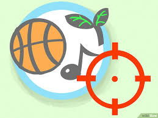
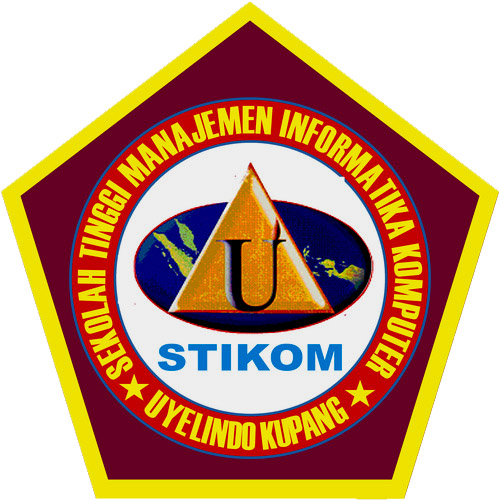

ALAMAT & KONTAK
RIWAYAT PENDIDIKAN
KEGIATAN & HOBI
Kegiatan sehari-hari saya yaitu sebagai Mahasiswa Di STIKOM UYELINDO Kupang. Saya Sekarang Berada Pada Semester 3
Saya memiliki beberapa hobi olahraga yaitu Bulu tangkis, bermain gitar dan catur, Hobi yang saya bermanfaat untuk kesehatan atau sekedar refresing.Read More!
 Nama saya adalah Kenny. Saya Lahir di Ambon, 20 Mei 1997. Saya merupakan anak pertama dari 3 bersaudara. Sekarang saya berkuliah di STIKOM UYELINDO Kupang tahun angkatan 2016 dengan mengambil program study Teknik Informatika Strata 1. Mata Kuliah yang menjadi Favorit saya adalah Pemrograman WEB dan Android. Saya memiliki cita cita Menjadi orang yang sukses dalam bidang IT.
Nama saya adalah Kenny. Saya Lahir di Ambon, 20 Mei 1997. Saya merupakan anak pertama dari 3 bersaudara. Sekarang saya berkuliah di STIKOM UYELINDO Kupang tahun angkatan 2016 dengan mengambil program study Teknik Informatika Strata 1. Mata Kuliah yang menjadi Favorit saya adalah Pemrograman WEB dan Android. Saya memiliki cita cita Menjadi orang yang sukses dalam bidang IT.
Moto hidup saya yaitu "carilah Tuhan maka kamu hidup" karena saya menyaini di dalam Tuhan pasti ada berkat yang tidak dapat diberikan oleh dunia contohnya sukacita dan damai sejaterah yang pasti bertahan selamanya tanpa mengenal situasi dan kondisi yang terjadi di sekitar kita. Demikian Profil singkat saya mudah-mudahan bermanfaat bagi kita semua.
 Selama saya berkuliah di kampus stikom uyelindo saya mengikuti kegiatan seminar yang diadakan setiap tahunnya oleh pihak kampus yang wajib diikuti oleh setiap mahasiswa/i dan pembicara dalam seminar memiliki keahlian dalam bidang IT, sedangkan proses belajar mengajar tentang berbagai macam bahasa pemograman yang diajarkan oleh setiap dosen berguna meningkatkan kemampuan setiap mahsiswa/i yang ada.
Selama berkuliah di Stikom Uyelindo Kupang saya banyak menemukan kekurangan dalam hal sarana dan prasarana namun di bidang kualitas pendidikan baik dosen dan mahasiswa sangat baik di tingkat regional, oleh karena itu manajemen kampus perlu meningkatkan kualitas sarana dan prasarana karena bagaimanapun sarana dan prasarana sangat menentukan suatu kualitas lulusan yang dihasilkan dari sebuah perguruan tinggi seperti Stikom Uyelindo Kupang